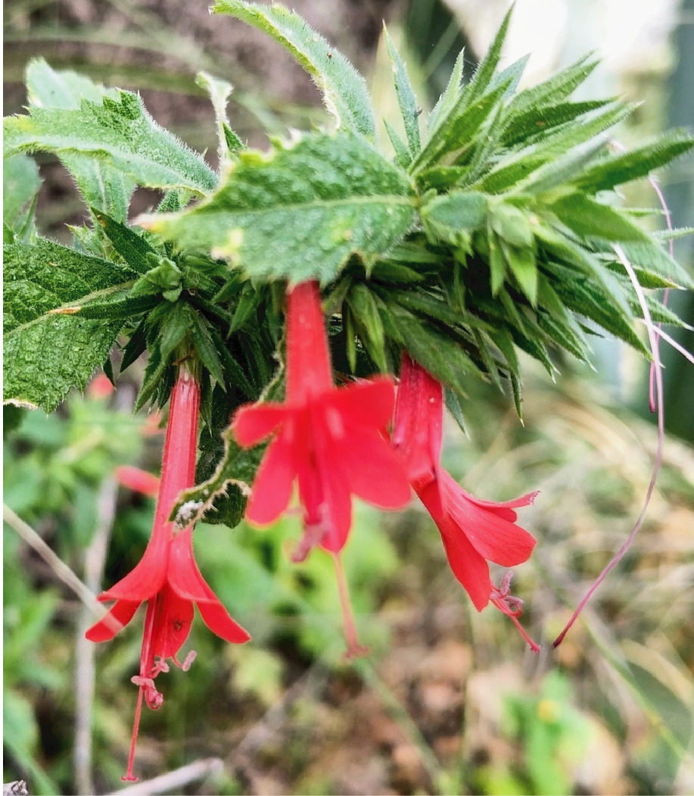

ESPINOSILLA
La Loeselia mexicana, comúnmente llamada espinosilla, disminuye la temperatura corporal, previene la caída del cabello y la aparición de caspa, además de ayudar contra el dolor de cabeza y enfermedades respiratorias.
Usos tradicionales: Resfriados, gripa, bronquitis, tos, ronquera, calor en el
estómago, dolor estómago, indigestión, laxante, bilis, disentería, tifoidea, caída de
cabello, caspa, cabello grasoso, erisipela, rubeola, sarampión, varicela, dolor de
cabeza, desinfectante, enfermedades culturales (susto, aire).
